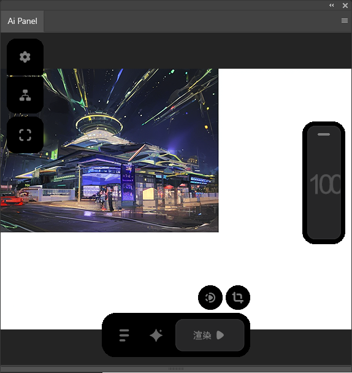
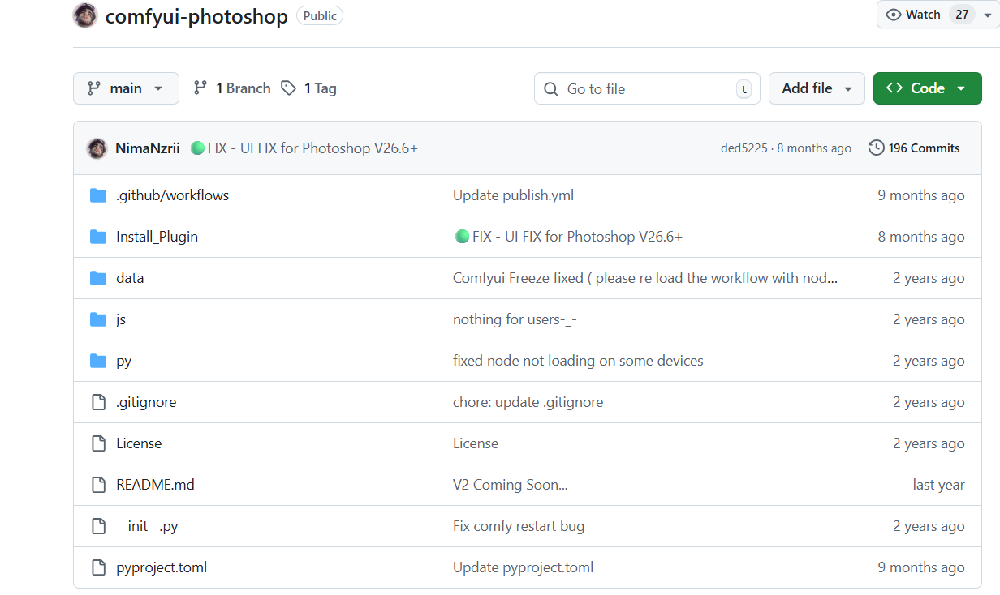
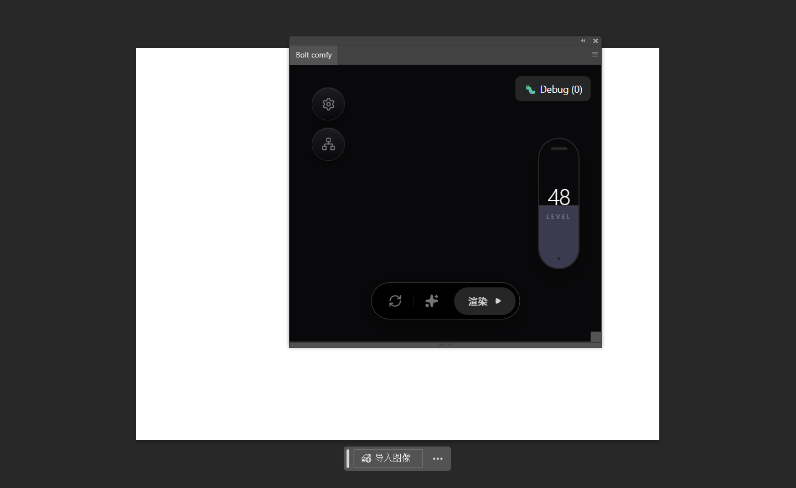
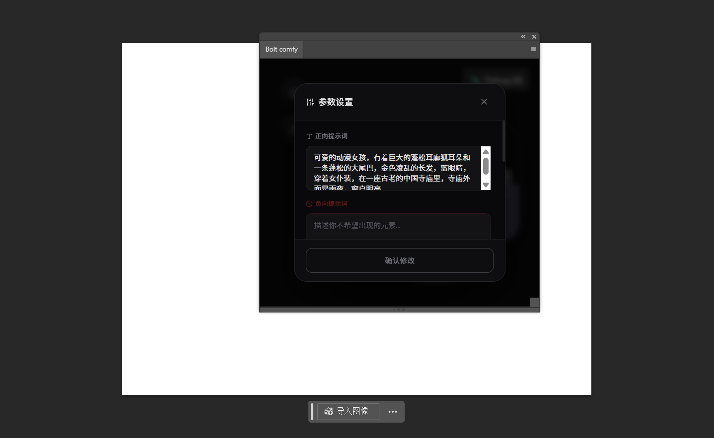
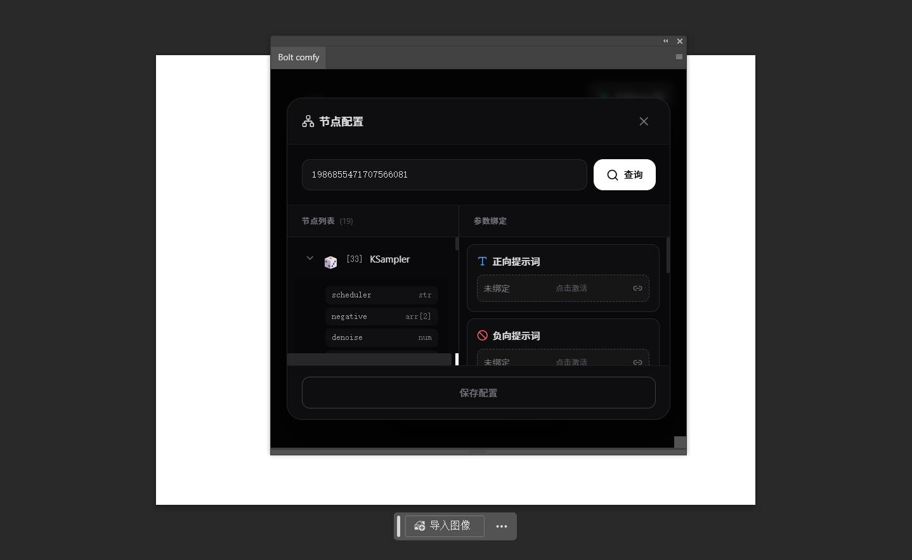

引言：为什么我要给 Photoshop 做一个 AI 插件？
还记得之前我写的那个小软件吗，在我痛腚思痛的一段时间后，我越写越开始自我怀疑，为什么我要从零去搭建一个类似于SD的软件？这不就是为了醋而包饺子吗，我仔细想了想，于是乎我诞生了个想法，让云端与生产力工具实际的结合到一块去。但实际上，市面上不是没有这种产品，相反还很多，像SD-PPPP这种，comfy-photoshop这种，还有近期挺火的houdini-comfy。但我又为何去花心思去做呢？配置太麻烦，如果说有这么一个插件，仅用几mb，不用本地部署comfy ui，只需稍稍等待一下时间，便可以实现相同的操作，也不用花费时间去下载一堆繁杂的模型，这不是大大提高了生产力吗，抱着这个想法，我开始了开发
开发初期参考
在初期设计的过程中，盯上了git上一个名为comfy-photoshop的开源项目其地址如下：
https://github.com/NimaNzrii/comfyui-photoshop
其演示如下：清晰的且简洁的界面设计，十分适合绘画作者的上手的ai工具风格，直接让让我挺着迷的这个项目的

在原本的构思中，他简直就是个完美的载体，我只用把项目给clone下来，并修改其后端，便可满足我的需求。但很可惜，作者的开源不是uxp插件的开源，而是comfy ui节点的放送。

开发方案
只能说，这种情况是较为痛苦的，众所周知接个后端的事情，甚至说后端我都不用写，毕竟像想要使用的平台，他本身就有一套可靠的后端，我只用更改前后端对接即可。但现在很抱歉了，我得从0开始复刻，我得开始了解与学习ps的插件该如何实现。
接着在选型的过程中，也是不断踩坑的，首先是ps插件类型的选择
{
1.cep插件(古旧的方案)
2.uxp插件(ps新设立的插件开发平台)
3.psjs脚本(简单的脚本，能实现ps自动化的基础)
}
实际上在开发的过程中，我不断抛弃和重拾这三种方案。中文互联网上的资料实在是有点太少了，参考信息仅有uxp的文档，某些大佬的博客。
至于为什么在不断踩坑：
- 初步尝试uxp，github上的ps-uxp开发案例，https://github.com/AdobeDocs/uxp-photoshop-plugin-samples这个项目，可能是因为没有即使更新的问题，其实际上部分技术栈如vue3，已经是无法正常运行的
- 即使当我通过ai补全了环境，我也发现uxp的浏览器v8环境，也无法利用上现代浏览器的便利，也就是说很多css/scss/sass的样式都会失效，出来的页面都会很畸形
- 后续再去尝试cep去进行开发，但会发现，cep的面板窗口大小是写死的，很难去进行调整，这不太符合直觉习惯，其次即使cep可以完美支持现代浏览器环境，使用各种浏览器框架，但其相关的教程文档，已经寥寥无几了，甚至可以说查无此人了。社区上的解决方案也是捉襟见肘。
- cep的主要脚本语言是jsx，这个。。。debug的过程简直就是灾难，你很难想象我是在使用编辑器，手敲完代码后，一遍一遍运行尝试验证的。这简直就像用记事本去开发一样折磨人。文档不全，debug工具不全。全靠盲操，也有可能是我没有找到。
在这个过程中，我找到了解决方案：使用以下脚手架bolt-uxp：
https://github.com/hyperbrew/bolt-uxp
该框架支持各个主流前端框架的uxp项目构建，如vue/react等等。同时如果你只是做自动化相关的脚本的话，可以不使用其内部的webview功能，但这也会带来我踩坑中的第一点，不完善的浏览器样式支持。所以我的开发是基于webview进行开发。
主要技术栈
总的来说这一套应用的开发逻辑仍旧逃不开web应用的方法，依旧是前端+后端的解决方案，而较大的差别是，我们多了套uxp api+photoshop api的支持。
| 类别 | 技术选型 |
|---|---|
| 插件平台 | Adobe Photoshop (2023+) + UXP Runtime |
| 前端框架 | Vue 3 (Composition API) |
| 语言 | TypeScript |
| 构建工具 | Vite + bolt-uxp 脚手架 |
| 状态管理 | Pinia（轻量级，适合插件场景） |
| 通信方式 | <font style="color:rgb(6, 10, 38);">fetch</font> + UXP 的 <font style="color:rgb(6, 10, 38);">network</font> 权限 |
好了我写文章水平有限，看看展示好了
主要功能有
1.调整工作流参数，动态传参
2.后台工作流随意搭配
3.将结果导回ps
目前界面展示：


